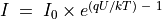
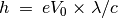
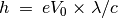

Diode I-V characteristics¶
Objective
Draw the I-V Characteristic of diode and compare the result with the theory.
Procedure


- Make connections
- Click on START to draw the characteristic curve.
- Analyse the data
- Plot the IV of LEDs
Discussion
The IV characteristic of an ideal PN junction diode is given by equation
, where  is the reverse saturation
current,
is the reverse saturation
current,  the charge of electron,
the charge of electron,  the Boltzmann constant,
the Boltzmann constant,  the
temperature in Kelvin. For a practical, non-ideal, diode, the equation
is
the
temperature in Kelvin. For a practical, non-ideal, diode, the equation
is  , where
, where  is the ideality factor, that
is 1 for an ideal diode. For practical diodes it varies from 1 to 2. We
have used a IN4148 silicon diode. The value of n for 1N4148 is around 2.
We have calculated the value of by fitting the experimental data with
the equation.
is the ideality factor, that
is 1 for an ideal diode. For practical diodes it varies from 1 to 2. We
have used a IN4148 silicon diode. The value of n for 1N4148 is around 2.
We have calculated the value of by fitting the experimental data with
the equation.
The voltage at which LED starts emitting light depends on its wavelength
and Planck’s constant. Energy of a photon is given by  .
This energy is equal to the energy of an electron that overcomes the
junction barrier and is given by
.
This energy is equal to the energy of an electron that overcomes the
junction barrier and is given by  . So Planck’s constant
, where
. So Planck’s constant
, where  is the wavelength of light from the LED,
is the wavelength of light from the LED,  the charge of electron and
the charge of electron and  the velocity of light.
the velocity of light.
Repeat the experiment by heating the diode to different temperatures.